Informacje
Poniżej znajdują się komendy, które może wykonywać zwykły użytkownik systemu Ubuntu – bez użycia sudo oraz uprawnień administratora.
Podstawowe operacje
ls / ls -l
wyświetla zawartość katalogu (wersja -l jest szczegółowa)
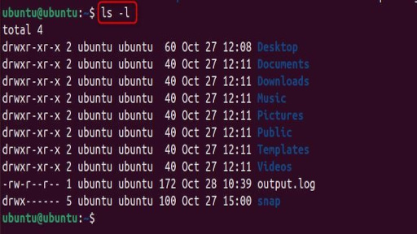
cd <katalog>
zmiana katalogu
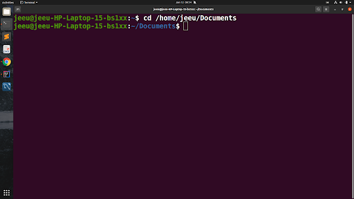
pwd / pwd -l
pwd -wyświetla aktualną ścieżkę katalogu
pwd -l - wyświetla aktualną scieżkę od katalogu root
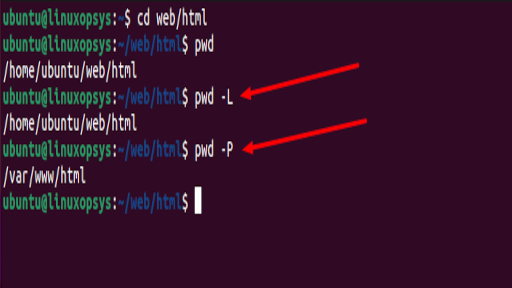
clear
czyści ekran terminala
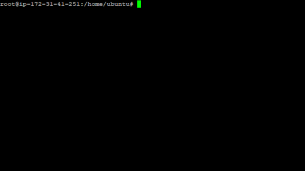
Pliki i katalogi
mkdir <nazwa>
tworzy nowy katalog
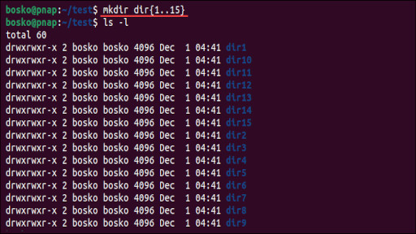
touch <nazwa>
tworzy pusty plik
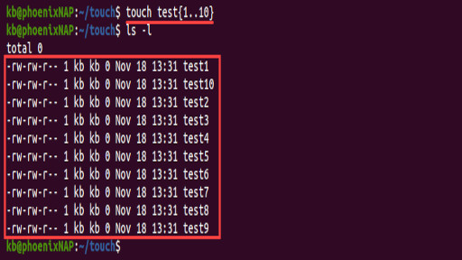
cp <źródło> <cel>
kopiuje plik lub katalog
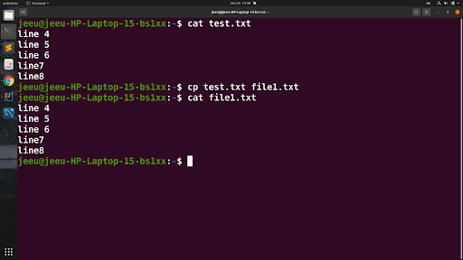
mv <stara> <nowa>
przenosi pliki lub zmienia nazwę
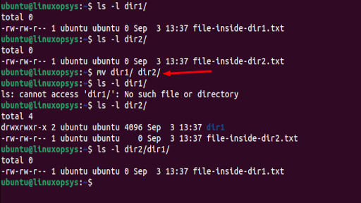
rm <plik>
usuwa plik (dla katalogów użyj -r)
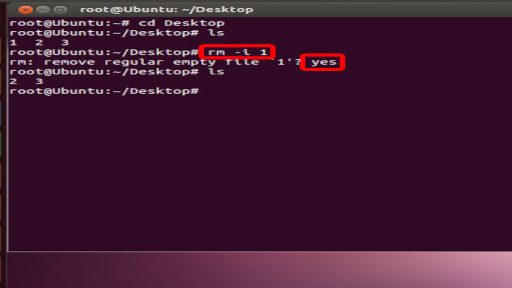
Informacje i pomoc
cat <plik> / cat <"plik1"> <"plik2">... > <plik z złączoną zawartością>
wyświetla zawartość pliku, można tym też połączyć zawartość kilku plików tekstowych
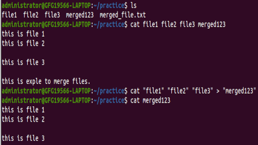
man <komenda>
instrukcja obsługi polecenia
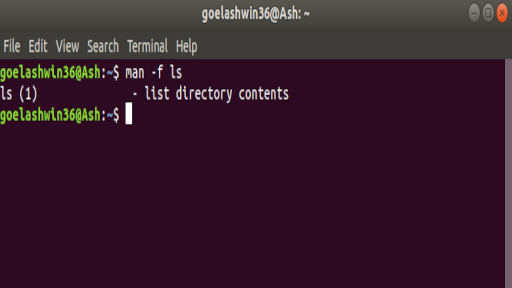
--help
lista dostępnych opcji dla komendy
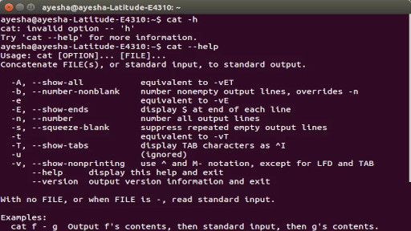
history (10)
historia wpisanych poleceń, można ograniczyć liczbę poleceń które zostaną pokazane poprzez wpisanie liczby po history
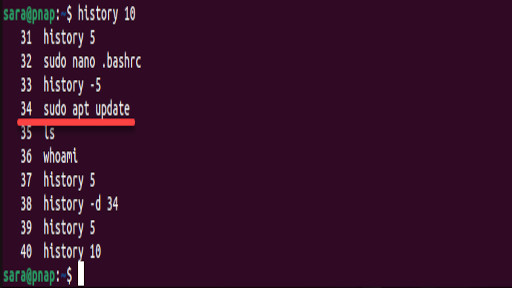
Użytkownik i procesy
whoami
nazwa aktualnego użytkownika
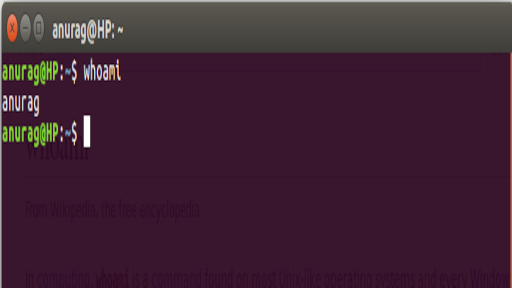
passwd
zmiana hasła użytkownika
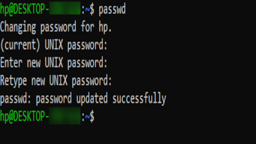
ps
lista działających procesów
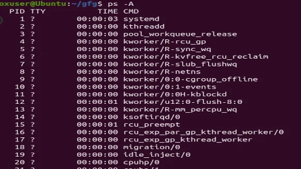
kill <PID>
zamyka proces o danym ID
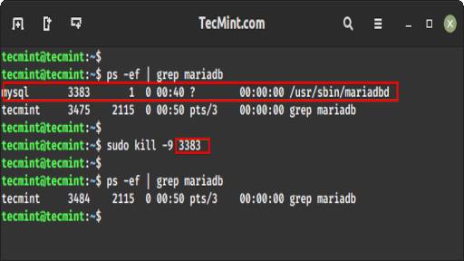
uptime
czas działania systemu
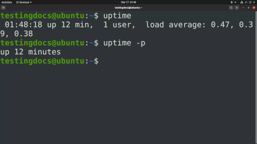
Karty sieciowe
ip a
Pokazuje wszystkie interfejsy i ich adresy IP.
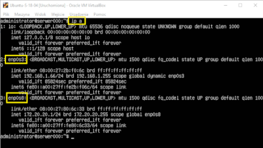
ip link
Wyświetla listę interfejsów sieciowych i ich stan.
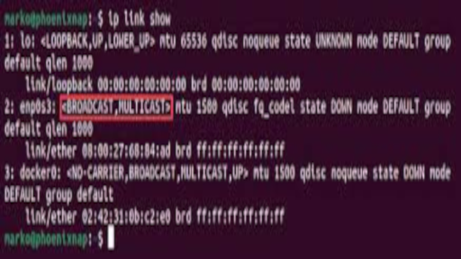
ip addr show
Pokazuje szczegółowe adresy IP dla każdego interfejsu.
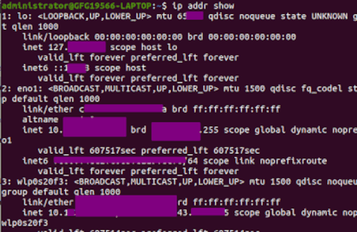
ip route
Pokazuje trasę do sieci (routing).
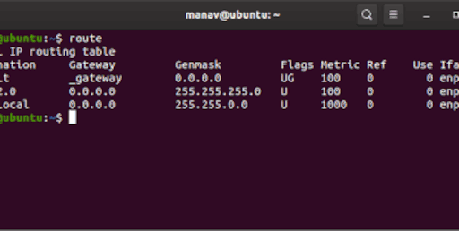
ping 8.8.8.8
Sprawdza połączenie z tym adresem IP.

ping google.com
Sprawdza połączenie z domeną.

resolvectl status
Pokazuje ustawienia DNS.

nmcli device status
Wyświetla aktywne urządzenia sieciowe i ich status.
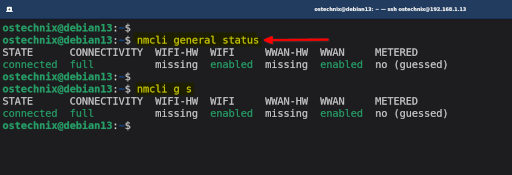